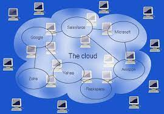

Informatica y OrdenadoresLa informática es la ciencia que estudia el tratamiento automático de la información mediante dispositivos electrónicos y sistemas computacionales. Los ordenadores, o computadoras, son herramientas que se han vuelto esenciales en la vida moderna y nos permiten realizar una amplia variedad de tareas de forma rápida y eficiente. Historia de la InformáticaDesde los primeros dispositivos de cálculo, como el ábaco, hasta las supercomputadoras modernas, la informática ha recorrido un largo camino. A lo largo de los años, figuras destacadas como Alan Turing, John von Neumann y Grace Hopper han hecho contribuciones significativas al desarrollo de la informática y la programación. Tipos de Ordenadores
|
 |
El software es el conjunto de instrucciones que le dicen al hardware qué hacer. Existen diferentes tipos de software, desde sistemas operativos hasta aplicaciones específicas. Gracias al software, los usuarios pueden interactuar con el ordenador y realizar diversas tareas, desde escribir documentos hasta jugar videojuegos y navegar por Internet.